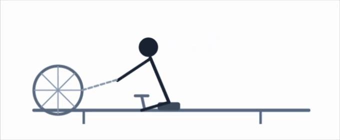
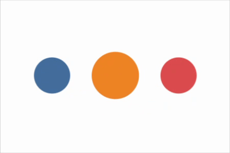

animejs provides R bindings to Anime.js v4, a JavaScript animation library. It produces self-contained HTML widgets via htmlwidgets that render in browser environments like RStudio Viewer, R Markdown documents, Quarto reports, and Shiny applications.
Installation
You can install the released version of animejs from CRAN:
install.packages("animejs")Or install the development version of animejs from GitHub with:
# install.packages("pak")
pak::pak("long39ng/animejs")Usage
Annotate SVG elements with a data-animejs-id attribute or a CSS class, then build a timeline in R and render it as a widget.
library(animejs)
svg_src <- '
<svg viewBox="0 0 400 200" xmlns="http://www.w3.org/2000/svg">
<circle data-animejs-id="c1" cx="50" cy="100" r="20" fill="#4e79a7"/>
<circle data-animejs-id="c2" cx="120" cy="100" r="20" fill="#f28e2b"/>
<circle data-animejs-id="c3" cx="190" cy="100" r="20" fill="#e15759"/>
</svg>
'
anime_timeline(
duration = 800,
ease = anime_easing_elastic(),
loop = TRUE
) |>
anime_add(
selector = anime_target_css("circle"),
props = list(
translateY = anime_from_to(-80, 0),
opacity = anime_from_to(0, 1)
),
stagger = anime_stagger(150, from = "first")
) |>
anime_add(
selector = anime_target_id("c2"),
props = list(r = anime_from_to(20, 40)),
offset = "+=200"
) |>
anime_render(svg = svg_src)
Key concepts
Timeline. anime_timeline() initialises a timeline with default duration, ease, and delay. anime_add() appends animation segments to it.
Properties. anime_from_to() describes a two-value transition; anime_keyframes() describes a multi-step sequence. Both are passed inside the props list of anime_add().
Stagger. anime_stagger() distributes animation start times across the elements matched by a selector. Supports linear, centre-out, and 2-D grid distributions.
Easing. All easing constructors return anime_easing objects serialised to Anime.js v4 strings. Parameterised families – anime_easing_elastic(), anime_easing_spring(), anime_easing_bezier(), anime_easing_steps(), anime_easing_back() – are also available.
Playback. anime_playback() controls looping, direction, and an optional play/pause/scrub control bar injected into the widget.